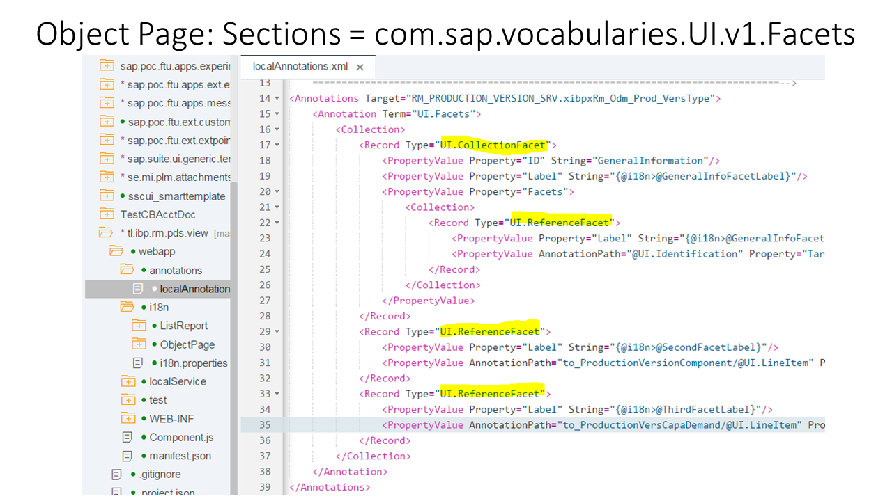

Maintaining Section Texts for the Object Page
If you have created sections in the local annotations file, you need to use the i18n properties file to edit the texts in the related i18n resource file.
Sections or facets are stored in the local annotations file. You have to add labels manually after the app has been generated. They should refer to the i18n.properties file.

Object Page: Sections = com.sap.vocabularies.UI.v1.FacetsYou define the labels in the i18n.properties file:
… #XTIT: Facet Label @GeneralInformation=General Information #XTIT: Facet Label @TechnicalData=Technical Data #XTIT: Facet Label @ProductCategory=Product Category #XTIT: Facet Label @ProductDescription=Product Description #XTIT: Facet Label @ProductDescriptions=Product Descriptions #XTIT: Facet Label @Supplier=Supplier #XTIT: Facet Label @Contacts=Contacts …
For more information about resources or i18n.properties files, see Replacing Standard UI Texts.